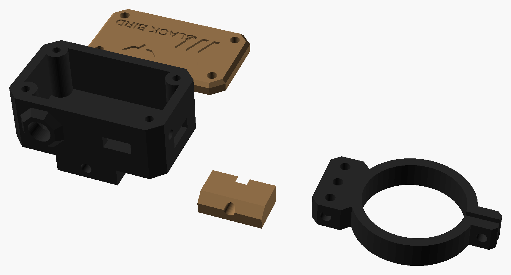

Prévia visual com medidas reais em milímetros. Os LEDs na ocular avisam quando o rifle está inclinado.
No modo "tamanho real", 1 mm do desenho = 1 mm na sua tela (depois de calibrar).
Encoste um cartão de crédito/débito na tela e mova o controle até o retângulo ter exatamente o mesmo tamanho (85,6 × 54 mm).
px/mm
cartão 85,6 × 54 mm
01Visão geral
48 × 28 × 22unidade principal (mm)
16 × 8 × 22pod de LEDs vertical (mm)
≈ 35 gpeso total estimado
≈ 8 h+autonomia estimada (250 mAh)
≈ 0,2°precisão prática
R$ 116–176custo de produção (sem frete)
02Montado no rifle
Vista lateral esquerda da sua Rossi Shadow com a Red Win 1-6×24 na montagem Geissele Super Precision de perfil alto (centro da luneta a 1,93″ ≈ 49 mm do trilho).
A base da Geissele ocupa o trilho entre os anéis, então a unidade principal vai no trilho de cima do guarda-mão, logo à frente da base da Geissele, embaixo da objetiva. Com a montagem alta (eixo a 49 mm), sobram uns 10 mm entre a unidade e a objetiva. O cabo, agora com uns 25 cm, corre pela lateral esquerda da luneta até o pod de LEDs, que abraça o tubo logo à frente do anel de zoom, na lateral esquerda (9 h). O topo da luneta fica livre para o telêmetro. Como o sensor mede a inclinação do trilho e não a da luneta, o botão ZERAR compensa qualquer diferença entre os dois.
03Unidade principal
Caixa impressa em 3D (PETG) com trava Picatinny de parafuso. O MPU6050 e a ESP32-C3 SuperMini ficam lado a lado, a bateria embaixo e o carregador TP4056 empilhado por cima, com o USB-C dele saindo na face traseira. O botão ZERAR e a chave liga/desliga ficam no lado esquerdo, que é o da mão de apoio de um atirador destro.
04Pod de LEDs
O pod é uma coluna vertical na lateral esquerda do tubo (9 h), com os 3 LEDs empilhados, e deixa o topo livre. Ele se projeta 16 mm para fora do tubo, então os LEDs ficam logo ao lado da ocular, na sua visão periférica, sem tirar o olho da luneta. A leitura é física: se o rifle cai para a esquerda, o pod desce e acende o LED de baixo; se cai para a direita, o pod sobe e acende o de cima. A abraçadeira aperta com um parafuso M3 × 16 e porca, com as orelhas sempre do lado oposto aos LEDs (3 h). Assim o topo do tubo fica livre para o telêmetro (12). Ela serve para tubo de 30 mm; para 1″ (25,4 mm), mude TUBO_D no pecas.scad.
05Como funciona
Situação
O que os LEDs fazem
Inclinação até 0,5°
Verde aceso
Rifle caído para a esquerda
Acende o LED de baixo (o pod desceu). Gire o rifle para a direita até voltar o verde.
Rifle caído para a direita
Acende o LED de cima (o pod subiu). Gire o rifle para a esquerda até voltar o verde.
Entre 0,5° e 2° / acima de 2°
Vermelho piscando / vermelho fixo
Parado por 2 min
Apaga e dorme; acorda sozinho quando o rifle se mexe
Segurar ZERAR por 2 s
Grava a posição atual como "nivelado" (faça com o rifle nivelado na bancada)
Clique curto no ZERAR
Troca o brilho entre 3 níveis (o mais baixo é o modo noturno, para não denunciar posição)
3DPeças 3D · estilo tático facetado
Todas as peças impressas deste projeto, nas cores de impressão (coyote e preto); cada peça sai de uma cor só. As tampas aparecem viradas para cima, como ficam no uso. Arquivos em 3D/stl; quantidades, suportes e configuração no 3D/LEIA-ME.txt.

Caixa preta chanfrada com moldura de 8 lados protegendo o ZERAR e painel hexagonal na lateral; tampa coyote com nervuras em V, nome e emblema; mandíbula coyote; pod de LEDs preto.
06Componentes
Componente
Medidas (mm)
Função
ESP32-C3 SuperMini
22,5 × 18 × 3,5
Cérebro: lê o sensor e acende os LEDs
Carregador TP4056 USB-C com proteção
≈ 26 × 17 × 4
Carrega a bateria (a SuperMini não tem carregador)
MPU6050 (módulo GY-521)
≈ 21 × 16 × 3
Acelerômetro e giroscópio, mede a inclinação
Bateria LiPo 502030 3,7 V ~250 mAh
30 × 20 × 5
Alimentação
LEDs 3 mm (2 vermelhos, 1 verde)
Ø3
Indicação no pod
Botão tátil 6×6
6 × 6 × 5
ZERAR e trocar brilho
Chave deslizante mini
8,5 × 3,6
Liga e desliga
3 resistores 330 Ω
¼ W
Limitam a corrente dos LEDs
Cabo 4 vias Ø2,5 (~25 cm)
Ø2,5
Liga o pod à unidade (3 LEDs + GND)
Caixa impressa 3D + trava Picatinny
48 × 28 × 22
Unidade principal
Pod impresso 3D + abraçadeira
16 × 8 × 22
Vertical, na lateral esquerda do tubo (30 mm ou 25,4 mm)
07Ligação elétrica
Esquema de ligação, sem escala. Cada bolinha amarela é um pino ou terminal onde vai uma solda; os pontos maiores marcam onde dois fios se unem.
De
Para
Observação
Bateria + / −
TP4056 B+ / B−
Vermelho no +
TP4056 OUT+
Chave liga/desliga → SuperMini 5V
O regulador da placa transforma a bateria em 3,3 V
TP4056 OUT−
SuperMini GND
SuperMini 3V3 / GND
MPU6050 VCC / GND
GPIO8 / GPIO9
MPU6050 SDA / SCL
I2C padrão da SuperMini
GPIO5 → resistor 330 Ω
LED de cima (vermelho), perna longa
Fio 1 do cabo
GPIO6 → resistor 330 Ω
LED do meio (verde), perna longa
Fio 2 do cabo
GPIO7 → resistor 330 Ω
LED de baixo (vermelho), perna longa
Fio 3 do cabo
Pernas curtas dos 3 LEDs (unidas)
GND
Fio 4 do cabo
GPIO10
Botão ZERAR → GND
Usa o pull-up interno, sem resistor
Opcional: MPU6050 INT
GPIO4
Acorda a placa quando o rifle se mexe (economiza bateria)
Resistores: os 3 de 330 Ω ficam dentro da unidade principal, soldados em série no fio de cada GPIO, com termorretrátil por cima. Custam centavos (kit com 10). O brilho final é ajustado no código (PWM), então dá para deixar o LED bem fraco à noite.
Atenção: para gravar o código pelo USB da SuperMini, desligue a chave antes. Se a bateria e o USB alimentarem a placa ao mesmo tempo, um briga com o outro e pode queimar o TP4056.
08Montagem passo a passo
Imprima as peças em PETG (camada de 0,2 mm, 4 paredes, 40% de preenchimento): a caixa e a tampa, a mandíbula móvel da trava Picatinny, o pod e a abraçadeira do pod para o tubo de 30 mm (ou 25,4 mm).
Teste na bancada antes de soldar. Ligue o MPU6050, os 3 LEDs (com os resistores) e o botão na SuperMini usando jumpers, alimentando só pelo USB. Grave o código e incline a placa com a mão: os LEDs precisam responder.
Monte o pod: coloque os LEDs nos 3 furos, de cima para baixo vermelho, verde e vermelho, com as pernas curtas viradas para o mesmo lado. Una as 3 pernas curtas e solde no fio 4 do cabo. Solde cada perna longa num dos fios 1, 2 e 3. Os LEDs entram justos nos furos de 3,1 mm. Passe o cabo pelo furo de saída do pod e prenda com uma abraçadeira de nylon no tubo da luneta (sem cola, para dar para desmontar).
Aperto do pod: encaixe o anel no tubo com os LEDs na lateral esquerda (9 h). As orelhas do aperto ficam do lado direito (3 h), e o topo fica livre para o telêmetro. Aperte com o parafuso M3 × 16 e a porca.
MPU6050 bem firme: parafuse o sensor plano em 2 pinos com parafusos M3 que sobem do fundo da caixa, ao lado da bateria, com a placa paralela à base da trava. Não use espuma embaixo do sensor: qualquer folga vira erro de leitura.
Energia: solde a bateria no B+ e no B− do TP4056 (vermelho no +). Ligue o OUT+ na chave e da chave no pino 5V da SuperMini, e o OUT− no GND. Cole a bateria no fundo com fita dupla face.
Placas: encaixe a SuperMini ao lado do MPU. Coloque o TP4056 por cima, com o USB-C alinhado ao furo traseiro. Entre as duas placas vai um pedaço de fita kapton (fita fina cor de âmbar, que isola e aguenta o calor do ferro de solda), para os pontos de solda de uma não encostarem na outra e darem curto. Na falta dela, serve fita isolante comum, de 2 voltas.
Resistores e cabo: solde os resistores de 330 Ω entre os GPIO5, 6 e 7 e os fios 1, 2 e 3 do cabo, com termorretrátil. O fio 4 vai no GND. Passe o cabo pela saída traseira e dê um nó por dentro para aliviar a tensão.
Lateral esquerda: encaixe a chave liga/desliga e o botão ZERAR (GPIO10 e GND) nos furos.
Feche com cuidado: confira com o multímetro que não há curto entre 5V/3V3 e GND e feche a tampa.
No rifle: coloque a unidade no trilho de cima do guarda-mão, logo à frente da base da Geissele (embaixo da objetiva), e aperte a trava. Prenda o pod no tubo, na lateral esquerda, logo à frente do anel de zoom. Fixe o cabo na luneta com abraçadeira de nylon ou velcro.
Calibre: nivele o rifle na bancada com um nível de bolha em cima do trilho ou da luneta e segure o botão ZERAR por 2 s.
09Custo de produção
Preços pesquisados em out/2026 no Mercado Livre e em lojas nacionais, sem frete. Só produtos novos: os links do Mercado Livre já abrem com o filtro "Novo". Vários itens só são vendidos em kit, então sobram peças para os próximos projetos.
Total (peças impressas na sua impressora não entram)
sem frete
≈ R$ 116
≈ R$ 176
10Pontos de atenção
As medidas dos módulos são as nominais dos modelos mais comuns. Confira as do lote que você comprar antes de modelar a caixa, porque podem variar 1 a 2 mm.
A folga de uns 10 mm até a objetiva vale para a Geissele de perfil alto (eixo a 49 mm do trilho). A unidade não pode ficar entre os anéis, porque a base da Geissele ocupa o trilho ali. Antes de imprimir a caixa, meça a distância real entre o trilho e o centro da luneta, porque réplicas podem ter alguns milímetros de diferença.
O sensor mede a inclinação da caixa, não da luneta. A trava precisa ficar firme no trilho, e é por isso que existe o botão ZERAR: ele compensa qualquer diferença de montagem.